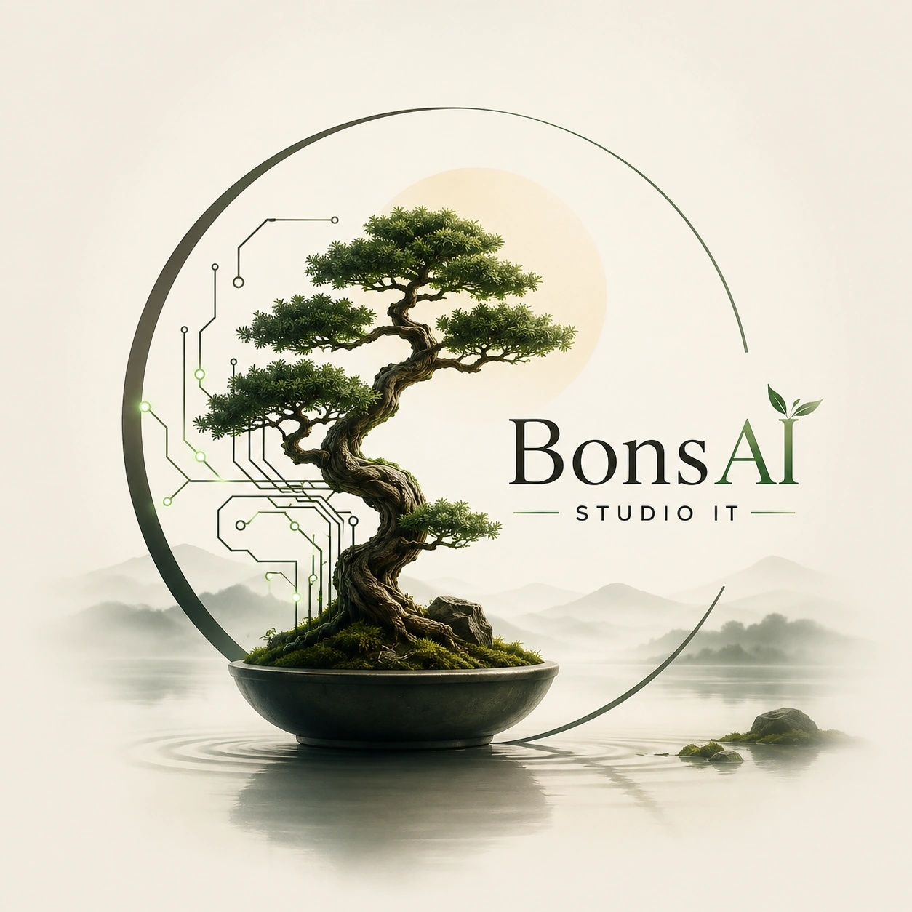

Trójmiasto · Lifestyle · 10 języków
Bangingo
Wielojęzyczna strona atrakcji premium w Trójmieście. Animowana rzeka, jacht i kolaż doświadczeń prowadzą do własnego planu wieczoru. Edycja Sunrise Rose łączy róż, brzoskwinię i morską zieleń.

BonsAI Studio CennikRealizacje
Cyfrowe rozwiązania stworzone dla realnych potrzeb biznesowych.
Trójmiasto · Lifestyle · 10 języków
Wielojęzyczna strona atrakcji premium w Trójmieście. Animowana rzeka, jacht i kolaż doświadczeń prowadzą do własnego planu wieczoru. Edycja Sunrise Rose łączy róż, brzoskwinię i morską zieleń.
02 / Konfigurator 3D · Rzemiosło · PL / EN
Konfigurator oprawy obrazu z animowanym składaniem i rozkładaniem warstw. Wybór ramy, wykończenia, passe-partout i szkła oraz osiem kolorystyk pracowni. Prezentacja w motywie Zorza — głęboki turkus i jasne panele.
Otwórz projekt ↗03 / Okinawa · Diving · EN / JP
Wielojęzyczna strona szkoły nurkowania na Okinawie, zaprojektowana tak, aby w przejrzysty sposób prowadzić użytkownika przez ofertę kursów, nurkowania rekreacyjne, lokalne spoty oraz kontakt. Projekt łączy klimat miejsca z czytelną strukturą i wygodnym doświadczeniem dla odbiorców anglo- i japońskojęzycznych.
Poznaj projekt SeaMonk →04 / Ceramika · Warsztaty · Lokalnie
Strona pracowni ceramicznej z ofertą warsztatów, cennikiem, galerią i wygodną ścieżką do rezerwacji miejsca przy kole.
Zobacz stronę projektu ↗05 / Finanse · Ubezpieczenia · Sopot
Strona firmy doradczej z Sopotu, prezentująca ubezpieczenia, finansowanie, leasing i ofertę pojazdów w spokojnym, czytelnym doświadczeniu online.
Zobacz stronę IN-WEST ↗06 / Creative studio · Strona internetowa
Strona kreatywnego studia marketingowego. Kosmiczny język wizualny, ruch i mocna typografia prowadzą od idei marki do zaproszenia do współpracy.
Otwórz projekt ↗07 / Sport · Kickboxing / Muay Thai
Strona klubu sportów walki w Sopocie. Oferta treningów, grafik, cennik i kontakt tworzą przejrzystą drogę do pierwszego treningu.
Otwórz projekt ↗08 / Przemysł · B2B
Projekt strony firmy stalowej. Kompetencje, realizacje i informacje o jakości prowadzą do zapytania ofertowego.
Otwórz projekt ↗09 / Hospitality · Restauracja
Projekt koncepcyjny strony restauracji w Gdańsku. Prezentacja kuchni, informacje o lokalu i przejście do zewnętrznego serwisu zamówień.
Otwórz projekt ↗Porozmawiajmy o nim.